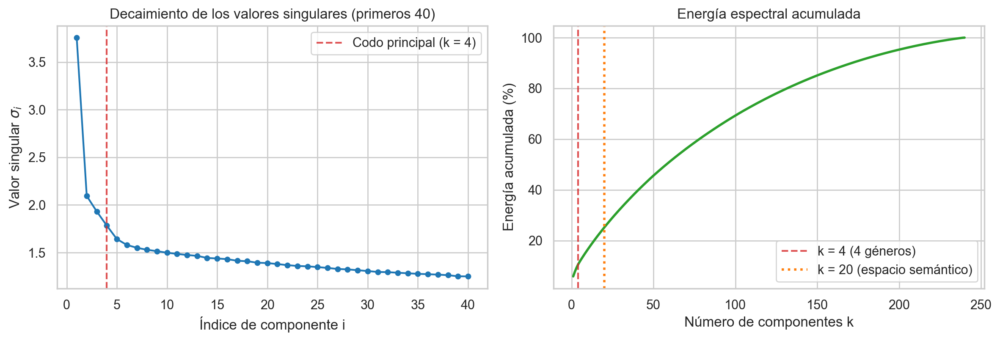
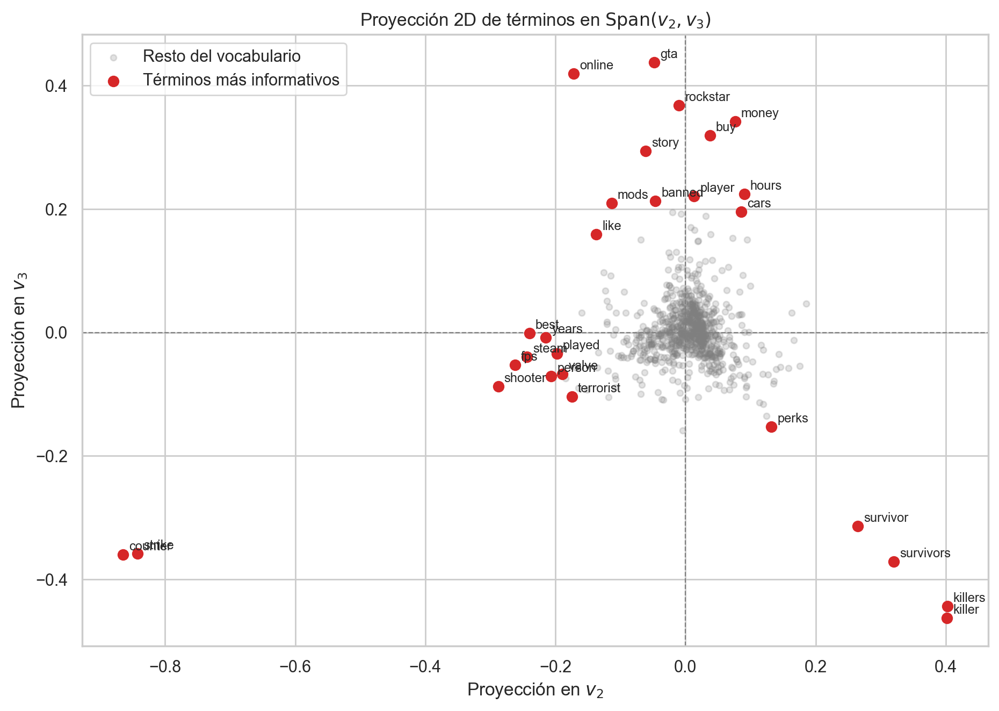

Figura 2: Proyección 2D de los 240 documentos en Span(u1, u2) (izquierda) y Span(u2, u3) (derecha).
Se construyó un corpus de n = 240 reseñas públicas de usuarios de Steam en inglés combinando dos repositorios abiertos en GitHub: mrafifrbbn/steam-reviews (para GTA V, Dead by Daylight y Rocket League) y mulhod/steam_reviews (para Counter-Strike). Para asegurar suficiente contenido léxico y evitar duplicados por ediciones, se filtraron reseñas de entre 280 y 3000 caracteres con al menos 180 letras alfabéticas y deduplicación por prefijo, seleccionando 60 reseñas por título. Todo el proceso es reproducible ejecutando download_data.py o cargando directamente data/steam_reviews.csv.
| Videojuego | Género | Documentos | Caracteres prom. | Palabras prom. | Horas jugadas (mediana) |
|---|---|---|---|---|---|
| Grand Theft Auto V (GTA V) | Action / Open World | 60 | 698.9 | 133.4 | 201.5 |
| Dead by Daylight | Survival Horror | 60 | 761.2 | 140.7 | 104.5 |
| Rocket League | Sports / Arcade | 60 | 572.6 | 107.7 | 333.0 |
| Counter-Strike | Tactical FPS | 60 | 675.0 | 119.8 | 172.0 |
Dado que los cuatro títulos pertenecen a géneros claramente diferenciados, esperamos que la matriz término-documento exhiba una estructura latente dominada por cuatro grupos temáticos asociados a cada juego: vocabulario de modo en línea, dinero e historia en GTA V (gta, online, rockstar, story, money), léxico asimétrico de persecución y terror en Dead by Daylight (killer, survivor, perks, repair), términos de autos y deporte en Rocket League (cars, rocket, football, fly) y terminología clásica de disparos en Counter-Strike (counter, strike, shooter, fps, aim). Asimismo, anticipamos que la primera componente singular capturará un eje transversal común a las reseñas de Steam (play, fun, game, hours), mientras que las componentes siguientes separarán los géneros, pudiendo aparecer cercanía entre títulos multijugador cuando se discuten trampas, baneos o plantillas de evaluación.
Tras decodificar entidades HTML y normalizar espacios, se aplicó conversión a minúsculas, tokenización alfabética de palabras de al menos 3 letras (\b[a-zA-Z]{3,}\b), eliminación de stopwords en inglés y filtrado por frecuencia documental (min_df=3, max_df=0.80) para descartar erratas aisladas y términos demasiado ubicuos. Se utilizó ponderación TF-IDF con frecuencia sublineal (1 + log(tf)), evitando que reseñas extensas o repeticiones dominen la norma de las columnas.
El vocabulario final quedó conformado por m = 850 términos. Transponiendo la matriz entregada por TfidfVectorizer, se construyó la matriz término-documento A ∈ ℝ850 × 240 (filas = términos, columnas = documentos), con una densidad de entradas no nulas del 3.53% (esparsidad 96.47%) y norma de Frobenius ||A||F = 15.4919.
Se calculó la descomposición SVD reducida A = U Σ VT mediante np.linalg.svd(A, full_matrices=False), obteniendo U ∈ ℝ850 × 240, Σ = diag(σ1, …, σ240) y VT ∈ ℝ240 × 240, con error de reconstrucción ||A − UΣVT||F = 4.96 × 10−14.

Los primeros valores singulares son σ1 = 3.756, σ2 = 2.094, σ3 = 1.931, σ4 = 1.783 y σ5 = 1.642. El salto más grande está entre σ1 y σ2 (eje común del vocabulario). Luego las diferencias son de ≈ 0.14–0.16 hasta σ4, y desde σ5 la curva se aplana (diferencias de 0.06 y luego ≈ 0.02–0.03). El codo no es abrupto, pero indica que las primeras 4 componentes se separan de una cola plana, algo coherente con 4 juegos (1 eje común + 3 direcciones de contraste). Con k = 4 se retiene solo el 10.58% de la energía, algo esperable en matrices TF-IDF dispersas, por lo que se usó k = 4 para interpretar temas y k = 20 (25.19% de la energía) como criterio práctico para medir similitudes sin arrastrar la cola ruidosa.
Siguiendo la geometría de la SVD, la proyección ortogonal de cada documento (columna de A) sobre Span(ua, ub) tiene coordenadas (uaT A:,d, ubT A:,d) = (σa Vd,a, σb Vd,b), mientras que la proyección de cada término (fila de A) sobre Span(va, vb) tiene coordenadas (At,: va, At,: vb) = (σa Ut,a, σb Ut,b).

En la Figura 2, Span(u1, u2) ubica todas las reseñas con u1 < 0 porque la primera componente recoge el eje promedio del lenguaje común de reseñas en una matriz no negativa. Al proyectar sobre Span(u2, u3) y Span(v2, v3) (Figura 3), los géneros se separan claramente: Dead by Daylight se proyecta hacia u2 > 0, u3 < 0 (killer, killers, survivors, survivor, dlc), Counter-Strike hacia u2 < 0, u3 < 0 (counter, strike, shooter, fps, steam) y GTA V hacia u3 > 0 (gta, online, rockstar, money, story). Rocket League queda cerca del origen y se superpone en parte con los demás en este plano; se diferencia mejor en u4. Asignando cada documento al centroide de juego más cercano se acierta en ≈ 78% de los casos con (u2, u3) y en ≈ 82% con (u2, u3, u4): la separación es clara, pero no perfecta. Como los signos de los vectores singulares son arbitrarios, lo que importa es la posición relativa de los grupos.
killers, killer, survivors, survivor, dlc) frente a Counter-Strike (counter, strike, shooter, fps, steam). La componente 3 (σ3 = 1.931) separa a GTA V (gta, online, rockstar, money, buy, story), y la componente 4 (σ4 = 1.783) aísla con claridad a Rocket League (cars, rocket, hours, league, football).survivor los vecinos son killer (0.95), survivors (0.88), unbalanced (0.87), pallets (0.85), repair (0.84), capturando las mecánicas asimétricas exactas de Dead by Daylight. Para rockstar emergen modder (0.86), ban (0.85), support (0.83), hacker (0.75), card (0.74), shark (0.73), reflejando el debate sobre GTA Online. Para cars aparecen football (0.81), fly (0.80), flying (0.76) (Rocket League), y para shooter surgen search (0.91), person (0.87), simplistic (0.86), modern (0.82) (Counter-Strike).rocket_league_09 y rocket_league_19, similitud 0.982) corresponde a reseñas con formato de plantilla/checklist (Graphics, Price/quality, Requirements). Entre juegos distintos, el par más cercano (gta_v_51 de GTA V y counter_strike_28 de Counter-Strike, similitud 0.853) conecta ambos títulos porque los dos usuarios denuncian haber sufrido un baneo injusto (banned, reason, account, hacks).Contrastación con la hipótesis: La hipótesis inicial se cumple en gran medida: sin usar etiquetas, la SVD recupera la estructura de los cuatro juegos, el espectro se aplana después de las primeras 4 componentes y las componentes 2, 3 y 4 separan documentos y términos por juego, aunque con superposición (sobre todo en Rocket League y en reseñas genéricas). Como hallazgo inesperado, en GTA V tiene gran peso la controversia por baneos, modders y Shark Cards en GTA Online, lo que explica la fuerte conexión semántica descubierta entre una reseña de GTA V y otra de Counter-Strike sobre baneos de VAC.
Límites del método y del corpus: El modelo de bolsa de palabras con TF-IDF ignora el orden sintáctico, las negaciones y el sarcasmo propio de Steam; además, la linealidad de la SVD no resuelve la polisemia cuando términos como hacker o mod se comparten entre juegos en línea distintos. Finalmente, el corpus se acota a 240 reseñas en inglés y es sensible a reseñas tipo plantilla (checklists), por lo que LSA debe usarse como guía exploratoria junto con la lectura directa del texto.